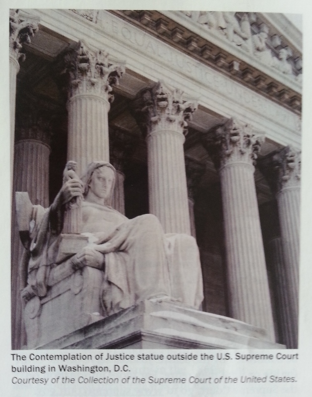
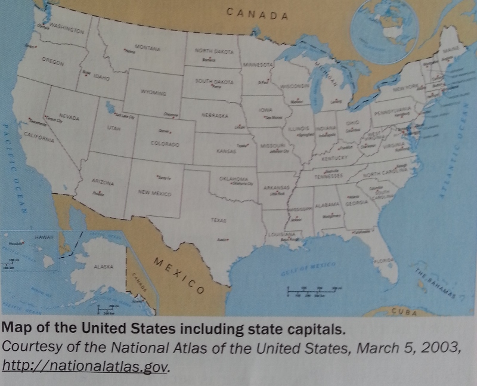

The Constitution establishes three branches of government: Legislative, executive, and judicial. Article I of the Constitution establishes the legislative branch. Article I explains that Congress makes laws. Congress ( the Senate and the House of Representatives) is the ligislative branch of the U.S. government. Article II of the Constitution establishes the executive branch. The executive branch enforces the laws that Congress passes. The executive branch makes sure all the people follow the laws of the United States. The president is the head of the executive branch. The vice president and members of the president's cabinet are also part of the executive branch. Article III of the Constitution establishes the judicial branch. The judicial branch places the highest judicial power in the Supreme Court. One responsability of the judicial branch is to decide if government law and actions follow the Constitution. This is a very important responsability.
The Constitution separate the government's power into three branches to prevent one person or group from having too much power. The separation of government into three branches creates a system of checks and balances. This means that each branch can block, or threaten to block, the actions of the other branches. Here are some examples: The Senate ( part of the lesgilative branch) can block a treaty signed by the president ( the executive branch). In this example, the legislative branch is "checking" the executive. The U.S Supreme Court ( the judicial branch) can reject a law passed by Congress ( the legislative branch). In this example, the judicial branch is "checking" the legislative branch. This separation of powers limits the power of the government and prevents the government from violating the rights of the people.
The job of the executive branch is to carry out, or execute, federal laws and enforce laws passed by Congress. The head of the executive branch is the president. The president is both the head of state and the head of government. The president's power include the ability to sign treaties with other countries and to select ambassadors to represent the United States around the world. The president also sets national policies and proposes laws to Congress. The president names the top leaders of the federal department. When there is a vacancy on the Supreme Court, the president names a new member. However, the Senate has the power to reject the president's choices. This limit on the power of the president is an example of checks and balances.
Congress makes federal laws. A federal law usually applies to all states and all people in the United States. Either side of Congress - The Senate or the House of Representatives- can propose a bill to address an issue. When the Senate proposes a bill, it sends the bill to a Senate committee. The Senate committee studies the issue and the bill. When the House of Representatives proposes a bill. it sends the bill to a House of Representatives committee. The committee studies the bill and sometimes makes changes to it. Then the bill goes to the full House or Senate for consideration. When each chamber passes its own version of the bill, it often goes to a "conference committee." The conference committee has members from both the House and the Senate. This committee discusses the bill, tries to resolve the differences, and writes a report with the final version of the bill. Then the committee sends the final version of the bill back to both houses for approval. If both houses approve the bill, it is considered "enrolled". An enrolled bill goes to the president to be signed into law. If the president signs the bill, it becomes a federal law.
Congress is divided into two parts -the Senate and the House of Representatives. Because it has two "chambers." the U.S. Congress is known as a "bicameral" legislature. The system of checks and balances works in Congress. Specific powers are assigned to each of these chambers. For example, only the Senate has the power to reject a treaty signed by the president or a person the president chooses to serve on the Supreme Court. Only the House of Representatives has the power to introduce a bill that requires Americans to pay taxes.
There are 100 senators in Congress, two from each state. All states have equal power in the Senate because each state has the same number of senators. States with very small population have the same number of senator as states with very large populations. The Framers of the Constitution made sure that the Senate would be small. This would keep it more orderly than the larger House of Representatives. As James Madison wrote in Federalist Paper #63, the Senate should be a "temperate and respectable body of citizens" that operates in a "cool and deliberate" way.
The Framers of the Constitution wanted senators to be independent from public opinion. They thought a fairly long, six-year term would give them this protection. They also wanted longer Senate terms to balance the shorter two-year terms of the members of the House, who would more closely follow public opinion. The Constitution puts no limit on the number of terms a senator may serve. Electrons for US. senators take place on even-numbered years. Every two years, one-third of the senators are up for election.
Answers will vary-[District of Columbia residents and residents of U.S. territories should answer that D.C. ( or the territory where the applicant lives) has no U.S. Senators.]
For a complete list of U.S senators and the states they represent, go to www.senate.gov
The House of Representatives is the larger chamber of Congress. Since 1912, the House of Representatives has had 435 voting members. However, the distribution of members among the states has changed over the years. Each state must have at least one representative in the House. Beyond that, the number of representatives from each state depends on the population of the state. The Constitution says that the government will conduct a census of the population every 10 years to count the number of people in each state. The results of the census are used to recalculate the number of representatives each state should have. For example, if one state gains many residents that state could get one or more new representatives. If another state loses residents, that state could lose one or more. But the total number of voting U.S. representatives does not change.
People who live in a representatives's district are called "constituent." Representatives do not do this, they may be voted out of office. The Framers of the Constitution believed that short two-year terms and frequent elections would keep representatives clos to their constituents, public opinion, and more aware of local and community concerns. The Constitution puts no limit on the number of terms a representative may serve. All representatives are up for election every two years.
Answers will vary. [Residents fo territories with nonvoting Delegates or Resident Commissioner may provide the name of that Delegate or Commissioner. Also acceptable is any statement that the territory has no (voting) Representatives in Congress.]
For a complete list U.S. representatives and the districts they represent, go www.house.gov.
Senators are elected to serve the people of their state for six years. Each of the two senators represents the entire state. Before the 17th Amendment to the Constitution was ratified in 1913, the state legislatures elected the U.S. senators to represent their state. Now, allo the voters in a state elect their two U.S. Senators directly.
The Founding Fathers wanted people in all states to be represented fairly. In the House of Representatives, a state's population determines the number of representatives it has. In this way, states with many Senate, every state has the same number of senators. This means that states with few people still have a strong voice in the national government.
Early American leaders thought that the head of the British government, the king, had too much power. Because of this, they limited the powers of the head of the new U.S. government. They decided that the people would elect the president every four years. The President is the only official elected by the entire country through the Electoral College. The Electoral College is a process that was designed by the writers of the Constitution to select presidents. It came from a compromise between the president being elected directly by the people and the president being chosen by Congress. Citizen vote for electors, who then choose the president. Before 1951, there was no limit on the number of terms a president could serve. With the 22nd Amendment to the Constitution, the president can only be elected to two terms ( four years each) for a total of eight years.
The Constitution did not set a national election day. In the past, elections for federal office took place on different days in different states. In 1845, Congress passed legislation to designate a single day for all American to vote. It made Election Day the Tuesday after the first Monday in November. Congress chose November because the United States was mostly rural. By November, farmers had completed their harvests and were available to vote. Another reason for this date was the weather. People were able to travel because it was not yet winter. They chose Tuesday for Election Day so that voters had a full day fater Sunday to travel to the polls.
Donald Trump es the 45th president of the United States. He won the presidential election of 2016. As president, he is the head of the executive branch. As commander in chief, he is also in charge of the military.Real estate developer Donald John Trump was born in 1946, in Queens, New York. In 1971, he became involved in large, profitable building projects in Manhattan. In 1980, he opened the Grand Hyatt, which made him the city's best-known developer. In 2004, Trump began starring in the hit NBC reality series The Apprentice, which also spawned the offshoot The Celebrity Apprentice. Trump turned his aunttention to politics, and in 2015 he announced his candidacy for president of the United States on the Republican ticket. After winning a majority of the primaries and caucuses, Trump became the official Republican candidate for president on July 19, 2016. That November, Trump was elected the 45th President of the United States when he defeated Democratic candidate Hillary Clinton. real estate developer who specialized in constructing and operating middle-income apartments in Queens, Staten Island and Brooklyn. Trump also studied law and graduated from Harvard University in Massachusetts. He served as a U.S. senator for the state of Illinois before being elected president. President Obama's wife, called "the First Lady" is Michelle Obama.

If the president dies, resigns, or cannot work while still in office, the vice president becomes president. For this reason, the qualifications for vice president and president are the same. A vice president became president nine times in U.S. history when the president died or left office. William Henry Harrison died in office in 1841. Zachary Taylor died in office in 1850. Abraham Lincoln was killed in office in 1865. James Garfield was killed in office in 1881. William McKinley was killed in office in 1901. Warren Harding died in office in 1923. Franklin Roosevelt died in office in 1945. John F. Kennedy was killed in office in 1963. Richard Nixon resigned from office in 1974. No one other than the vice president has ever succeeded to the presidency.
If both the president and Vice President cannot server, the next person in line is the speaker of the House of Representatives. This has not always been the procedure. Soon after the country was founded, a law was passed that made the Senate president pro tempore the next in line after the president and vice president. The president pro tempore presides over the Senate when the vice president is not there. Later in U.S. history, the secretary of state was third in line. With the Presidential Succession Act of 1947, Congress returned to the original idea of having a congressional leader next in line. In 1967, the 25th Amendment was ratified. It established procedures for presidential and vice presidential succession.
The Founding Fathers strongly believed in republican ideals. A republic is a government where a country's political power comes from the citizens, not the rulers, and is put into use by representatives elected by the citizens. That is why they made the president the commander in chief. They wanted a civilian selected by the people. They did not want a professional military leader. The president commands the armed forces, but Congress has the power to pay for the armed forces and declare war. In 1973, many members of Congress believed that the president was misusing or abusing his powers a commander in chief. They thought that the president was ignoring the legislative branch and not allowing the system of checks and balances to work. In response, Congress passed the War Power Act. The War Powers Act gave Congress a stronger voice in decisions about the use of U.s trops. President Richard Nixon vetoed this bill, but Congress overrode his veto. Because we have a system of checks and balances, one branch of government is able to check the other branches.
Every law begins as a proposal made by a member of Congress, either a senator (member of the Senate) or representative (member of the House of Representatives.) When the Senate or House begins to debate the proposal, it is called a "bill." After debate in both houses of Congress, if a majority of both the Senate and House vote to pass the bill, it goes to the president. If the president wants the bill to become law, he signs it. If the presideent does not want the bill to become law he vetoes it. The president cannot introduce a bill. If he has an idea for a bill, he must ask a member of Congress to introduce it.
The president has veto power. This means that the president can reject a bill passed by Congress. If the president vetoes a bill, he prevents if from becoming a law. The president can send the bill back to Congress unsigned. Often he will list reason why he rejects it. The president does not sign the bill after 10 days and Congress is in session, the bill automatically becomes a law. If the president does nothing with the bill and Congress adjourns within the 10 -days period, the bill does not become law - this is called a "pocket veto." If two-thirds of the House and two-thirds of the Senate vote to pass the bill again, the bill becomes a law, even though the president did not sign it. This process is called "overriding the president's veto."It is not easy to do.
The Constitution says that the leaders of the executive departments should advise the president. These department leader, most of them called "secretaries," make up the cabinet. The president nominates the cabinet members to be his advisors. For a nominee to be confirmed, a majority of the Senate must approve the nominee. Throughout history, presidents have been able to change who makes up the cabinet or add departments to the cabinet. For example, when the Department of Homeland Security was created, President George W. Bush added the leader of this department to his cabinet.
People on the president's cabinet are the vice president and the heads of the 15 executive departments. The president may appoint other government officials to the cabinet. When George Washington was president, there were only four cabinet members: the secretary of state, secretary of the treasury, secretary of war, and attorney general. The government established the other executive departments later.
The judicial branch is one of the three branches of government. The Constitution established the judicial branch of government with the creation of the Supreme Court. Congress created the other federal courts. All these courts together make up the judicial branch. The courts review and explain the laws, and they resolve disagreements about the meaning of the law. The U.S. Supreme Court makes sure that laws are consistent with the Constitution, the Court can declare it unconstitutional. In this case, the Court rejects the law. The Supreme Court makes the final decision about all cases that have to do with federal laws and treaties. It also rules on other cases, such as disagreements between states.
The U.S Supreme Court has complete authority over all federal courts. Its rulings have a significant effect. A Supreme Court ruling can affect the outcome of many cases in the lower courts. The Supreme Court's interpretations of federal laws and of the Constitution are final. The Supreme Court is limited in its power over the states. It cannot make decisions about state law or state constitutions. The Court can decide that a state law or action conflicts with federal law or with the U.S. Constitution. If this happens, the state law become invalid. The Supreme Court case ruling Marbury v. Madison established this power, known as "judicial review." The Supreme Court also rules on cases about significant social and public policy issues that affect all Americans. The Supreme Court ruled on the court case Brown v. the Board of Education of Topeka, which ended racial segregation in schools.
The Constitution does not establish the number of justices on the Supreme Court. In the past, there have been as many as 10 and as few as six justices. Now, there are nine justices on the Supreme Court: eight associate justices and one chief justice. The Constitution gives the president the power to nominate justices to the Supreme Court. The nominee must then be confirmed by the Senate. Justice serve on the court for life or until they retire. For more information on the Supreme Court, go to www.supremecourt.gov.
John G. Roberts, Jr. is the 17th chief justice of the United States. After the death of former chief justice William Rehnquist in September 2005, President George W. Bush nominated Roberts for this position. Judge Robert became chief justice when he was 50. He is the youngest chief justice since 1801, When John Marshall became chief justice at the age of 45. Before he became chief justice, Judge Roberts served on the U.S. Court of Appeal for the District of Columbia Circuit. Although the chief justice of the United States is the highest official in the judicial branch his vote on the Supreme Court carries the same weight as the other justices.
The powers of government are divided between the federal government and the state governments. The federal is known as a limited government. Its powers are restricted to those described in the U.S. Constitution. The Constitution gives the federal government the power to print money, declare war, to create an army, and make treaties with other nations. Most other powers that are not given to the federal government in the Constitution belong to the states.
In the United States, the federal and state governments both hold power. Before the Constitution, the 13 colonies governed themselves individually much like state governments. It was not until the Articles of Confederation and then the Constitution that a national or federal government was established. Today, although each state has its own constitution, these state constitutions cannot conflict with the U.S. Constitution. The U.S. Constitution is the supreme law of the land. The state governments hold powers not given to the federal government in the U.S. Constitution. Some powers of the state government are the power to create traffic regulation and marriage requirements, and to issue driver's licenses. The Constitution also provides a list of powers that the states do not have. For example, states cannot coin (create) money. The state and federal governments also share some powers, such as the ability to tax people.
To leaern the name of the governor of your state or territory, go to www.usa.gov. Similar to the federal government, most states have three branches of government. The branches are executive, legislative, and judicial. The governor is the chief executive of the state. The governor's job in a state government is similaer to the president's job in the federal government. However, the state laws that a governor carriers out are different from the federal laws that the president carries out. The Constitution says that certain issues are covered by federal, not state, laws. All other issues are covered by state laws. The governor's duties and powers vary from state to state. The number of years that a governor is elected to serve -called a "term" - is four years. The exception are New Hampshire and Vermont, where governors serve for two years.
To learn the capital of your state or territory, go to www.usa.gov. Each state or territory has its own capital. The state capital is where the state government conducts its business. It is similare to the nation's capital, Washington, D.C., where the federal government conducts its business. Some state capitals have moved from one city to another over the years, but the state capitals have not changed since 1910. Usually, the governor lives in the state's capital city.
The Constitution did not establish political parties, President George Washington specifically warned against them. But early in U.S. history, two political groups developed. They were the Democratic Republicans and the Federalists. Today, the two major political parties are the Democratic Party and the Republican Party. President Andrew Jackson created the Democratic Party from the Democratic-Republicans. The Republican Party took over from the Whigs as a major party in the 1860s. The first Republican president was Abraham Lincoln. Throught U.S. history, there have been other parties. These parties have included the know-Nothing )(also called American Party), Bull-Moose (also called Pregressive), Reform, and Green parties. They have played various roles in American politics. Political party membership in the United States is voluntary. Parties are made up of people who organize to promote their candidates for election and to promote their views about public policies.
The two major political parties in the United States today are the Democratic and Republican parties. The current president, Donald Trump, is a member of the Republican Party. Other Notable Republican president include Abraham Lincoln, Theodore Roosevelt, Warren Harding, Herber Hoover, Dwight Einsenhower, Ronald Reagn, and George H.W. Bush. Since the middle of the 19th century, the symbol of the Republican Party has been the elephan. The Republican Party is also known as the "Grand Old Party" or the "GOP". The symbol of the Democratic Party is the donkey.